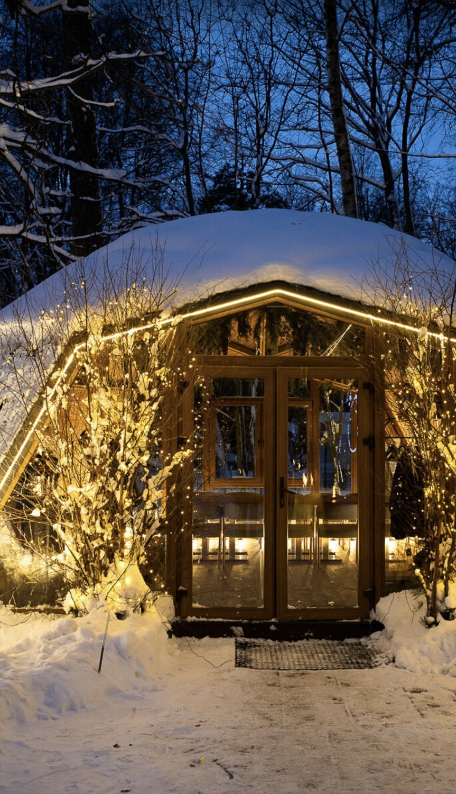

Внимание к деталям

Очаг в центре зала
Очаг в центре зала
Живой огонь, который встречает вас с порога. Не фотообои — настоящее пламя, вокруг которого строится весь интерьер и вся жизнь ресторана.

Панорама леса
Панорама леса
Большие окна, за которыми берёзы и сосны парка. Четыре сезона — четыре разных ресторана. Зимой снег и отсвет очага, летом — зелёный живой театр.

Приватная беседка
Приватная беседка
Стеклянный геокупол с цветочным сводом до 25 человек — ваше отдельное пространство среди леса. Идеален для праздников, камерных вечеров и деловых встреч, где важна атмосфера.

Летняя веранда
Летняя веранда
Открытое пространство под небом, в обнимку с деревьями. Место, где время замедляется, а вкус еды становится острее. Завтраки с 11:00, ужины до полуночи.

Dog Friendly
Dog Friendly
FO'X принимает всю семью, включая четвероногих. Ваш питомец — полноправный гость этого места. Мы любим их так же, как вы.

Авторская кухня
Авторская кухня
Легендарная форель в коконе из дровяной печи, томлёное мясо на углях, ароматная выпечка с горным сыром. Бренд-шеф Бисо Чеченов — авторский взгляд на кавказскую кухню из локальных продуктов. Средний чек от 2 500 ₽.

Стол-крыло самолёта
Стол-крыло самолёта
В центре зала — стол из настоящего авиационного крыла, клёпаный алюминий и живой огонь в чашах. Индустриальная душа FO'X превращает обычный ужин в событие.

Легенда за стеклом
Легенда за стеклом
Кастом-мотоцикл в стеклянной витрине — характер места. FO'X про скорость, свободу и силу, собранные под одной крышей у самого леса.